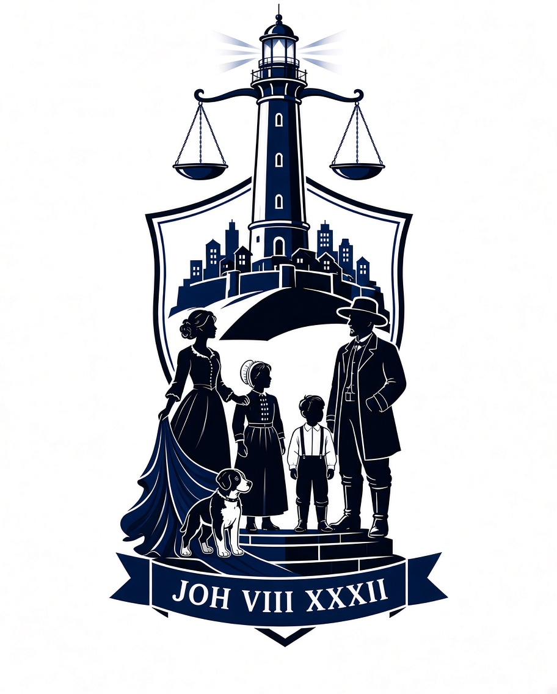

ARAI IS AN INDEPENDENT, NON-PARTISAN FORENSIC AUDIT. We are NOT affiliated with any third-party coalitions, hacking groups, or automated data-scraping tools. All data is obtained through official, legal FOIA channels only. We strictly forbid and dissociate from scripts, web-crawlers, military impersonation, and any form of fraudulent misrepresentation. All applicant information is provided voluntarily and professionally redacted to protect identity.
ARAI IS 'N ONAFHANKLIKE, NIE-PARTYDIGE FORENSIESE OUDIT. Ons is NIE geaffilieer met enige derdeparty-koalisies, hacker-groepe, of geoutomatiseerde data-skraping-instrumente nie. Alle data word slegs deur amptelike, wettige FOIA-kanale verkry. Ons verbied streng en distansieer onsself van skrifte, web-kruipers, militêre nabootsing, en enige vorm van bedrieglike wanvoorstelling. Alle aansoekerinligting word vrywillig verskaf en professioneel geredigeer om identiteit te beskerm.

Independent Data Custodian | Onafhanklike Data-bewaarder
ARAI is conducting an independent forensic audit of USRAP adjudications for Afrikaner applicants.
ARAI voer 'n onafhanklike forensiese oudit uit van USRAP-adjudikasies vir Afrikaner-aansoekers.
In late June and July 2026, ARAI first documented a series of anomalies in the Afrikaner USRAP adjudication pathway: 2025 approvals followed by denials after an tremendous long waiting period, cancelled flight arrangements, contradictory case statuses, and correspondence routed through automated queues without individual adjudication.
We began our investigation because these irregularities did not fit the pattern of individual administrative error. They indicated systemic dysfunction.
That same pattern is now repeating itself. The question is not whether this should be documented – it is who will document it. If we do not, who will? If we do not act now, when? For whom must we wait to expose these irregularities and bring them into the light?
ARAI was established to answer that call. We are not waiting for permission. We are not waiting for approval. We are documenting the evidence, preserving the records, and preparing the case for formal submission to the appropriate oversight authorities.
The truth will be recorded, whether the system acknowledges it or not.
In laat Junie en Julie 2026 het ARAI vir die eerste keer 'n reeks anomalieë in die Afrikaner USRAP-adjudikasieroete gedokumenteer: 2025 goedkeurings gevolg deur afwysings na 'n geweldige lang wagtyd, gekanselleerde vlugreëlings, teenstrydige saakstatusse, en korrespondensie wat deur outomatiese stelsels gestuur is sonder individuele adjudikasie.
Ons het ons ondersoek begin omdat hierdie onreëlmatighede nie die patroon van individuele administratiewe foute gevolg het nie. Hulle het sistemiese wanfunksionering aangedui.
Daardie selfde patroon herhaal hom nou. Die vraag is nie of dit gedokumenteer moet word nie – dit is wie dit sal dokumenteer. As ons dit nie doen nie, wie sal? As ons nie nou optree nie, wanneer? Vir wie moet ons wag om hierdie onreëlmatighede bloot te lê en in die lig te bring?
ARAI is gestig om daardie oproep te beantwoord. Ons wag nie vir toestemming nie. Ons wag nie vir goedkeuring nie. Ons dokumenteer die bewyse, bewaar die rekords, en berei die saak voor vir formele voorlegging aan die toepaslike toesighoudende owerhede.
Die waarheid sal opgeteken word, of die stelsel dit erken of nie.
— ARAI Data Custodian / ARAI Data-bewaarder
ARAI conducts independent forensic audits of USRAP adjudications to expose systemic corruption and administrative malpractice. Our audit focuses on:
ARAI voer onafhanklike forensiese oudits uit op USRAP-adjudikasies om sistemiese korrupsie en administratiewe wanpraktyke bloot te lê. Ons fokus op:
We adhere to strict data custody standards to ensure applicant privacy and procedural accuracy in all submissions to U.S. regulatory bodies.
Ons voldoen aan streng databewaringstandaarde om aansoekerprivaatheid en prosedurele akkuraatheid te verseker in alle voorleggings aan Amerikaanse regulerende liggame.
Do not wait for the system to correct itself. Join the individual audit force. We are preparing the Master Dossier for formal OIG submission. Middle September 2026, the complete forensic evidence package will be made available.
*All submissions are hashed and processed for individual case-by-case petitioning.*